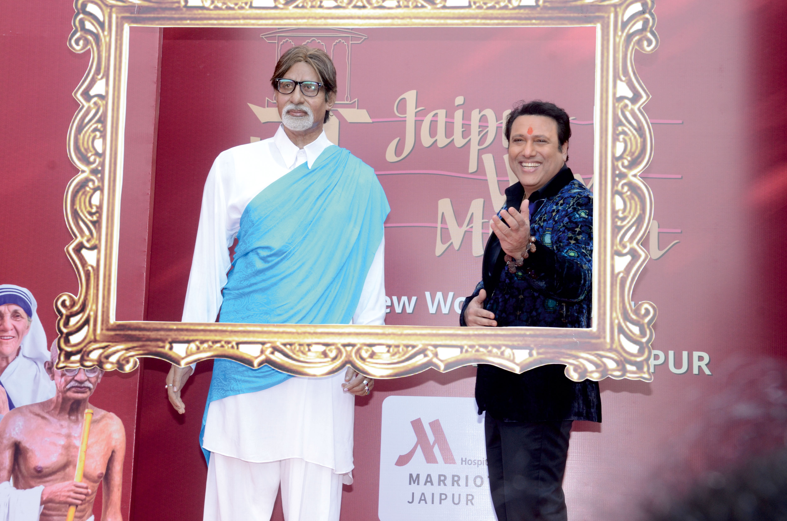
Hall of Icons • Jaipur Wax Museum
The Celebrity Gallery
Step into the spotlight alongside lifelike wax tributes to cinema legends, sporting titans, and global icons.
42+ Lifelike Statues
Bharat Ratnas & Champions
Bollywood & World Icons
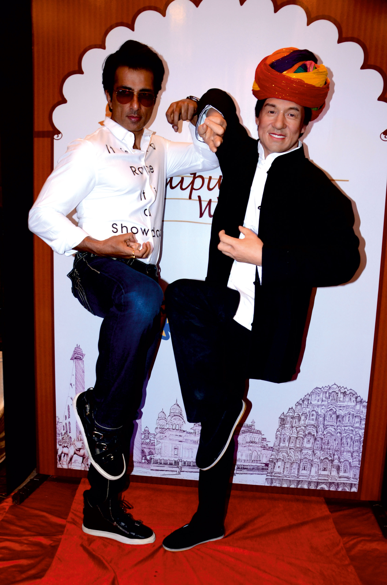
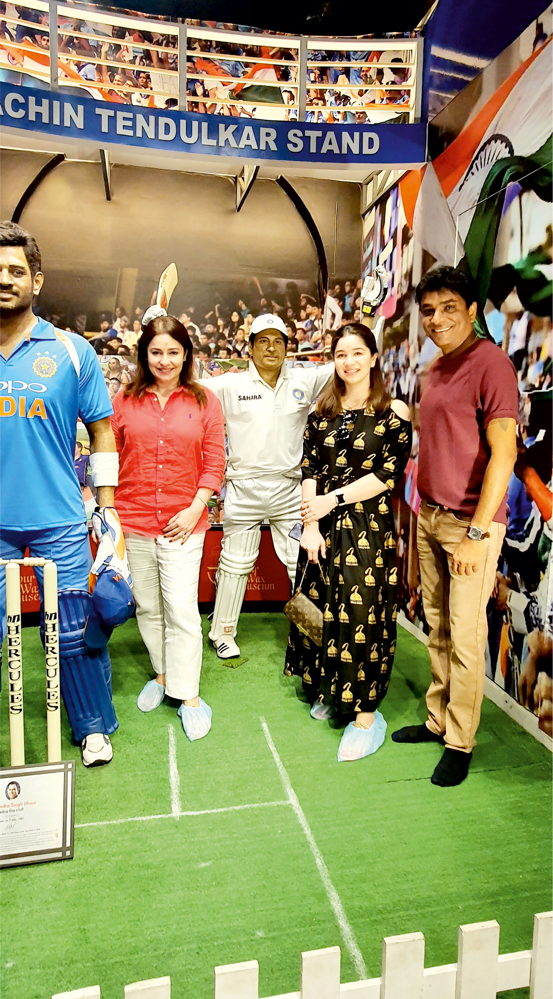
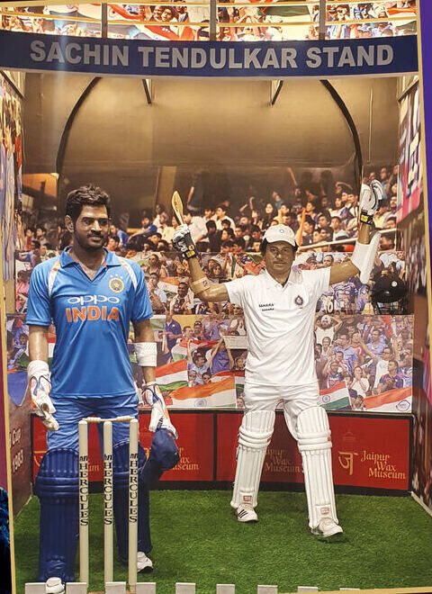
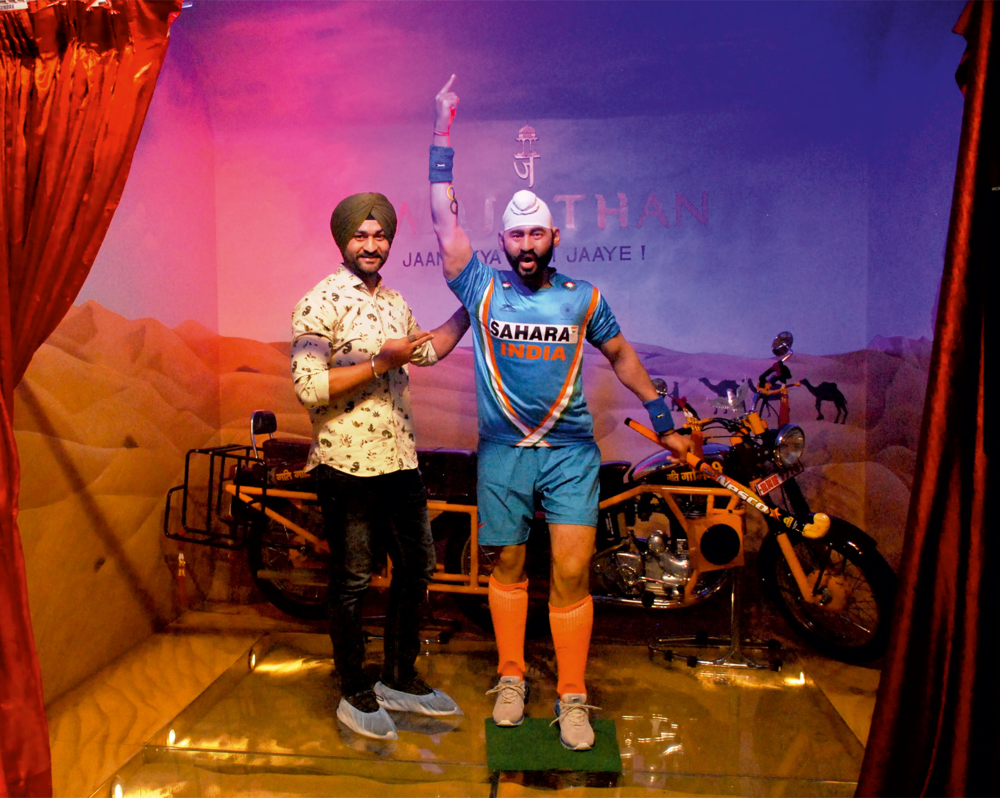
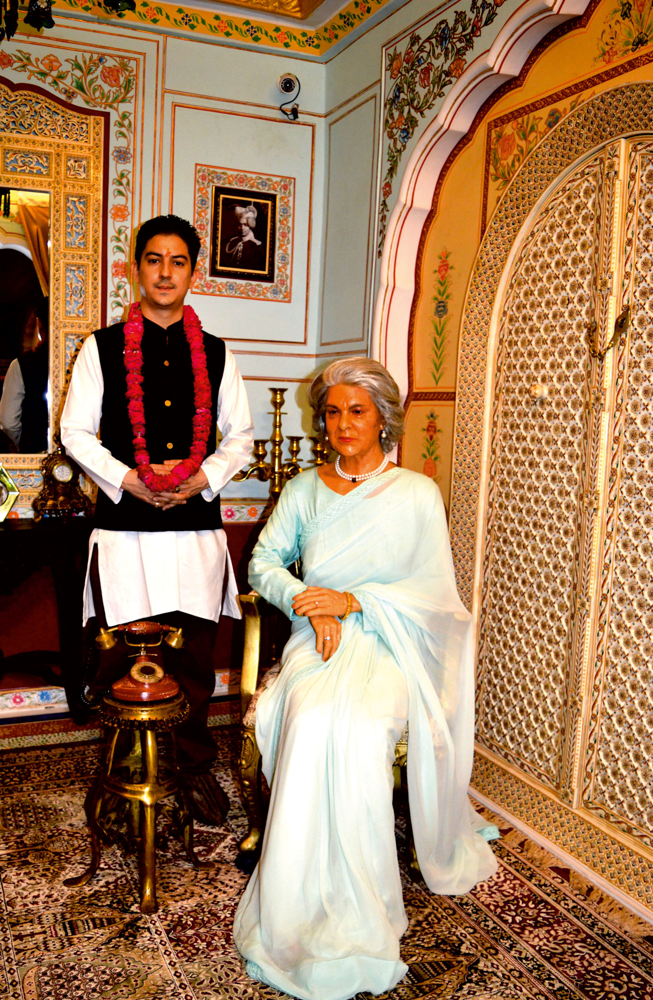
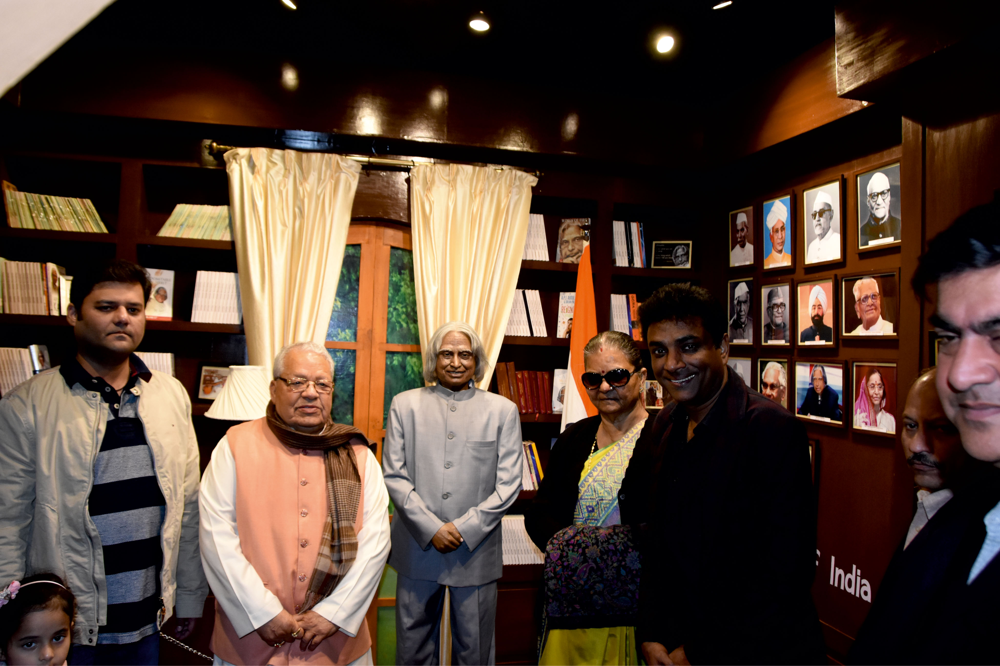
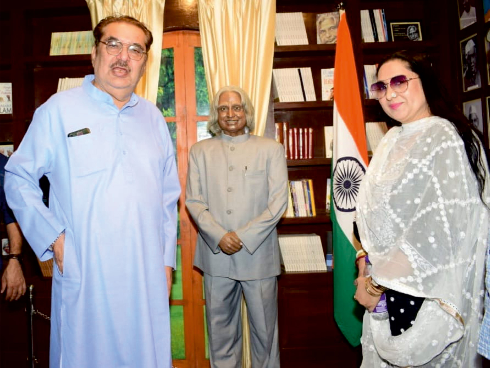
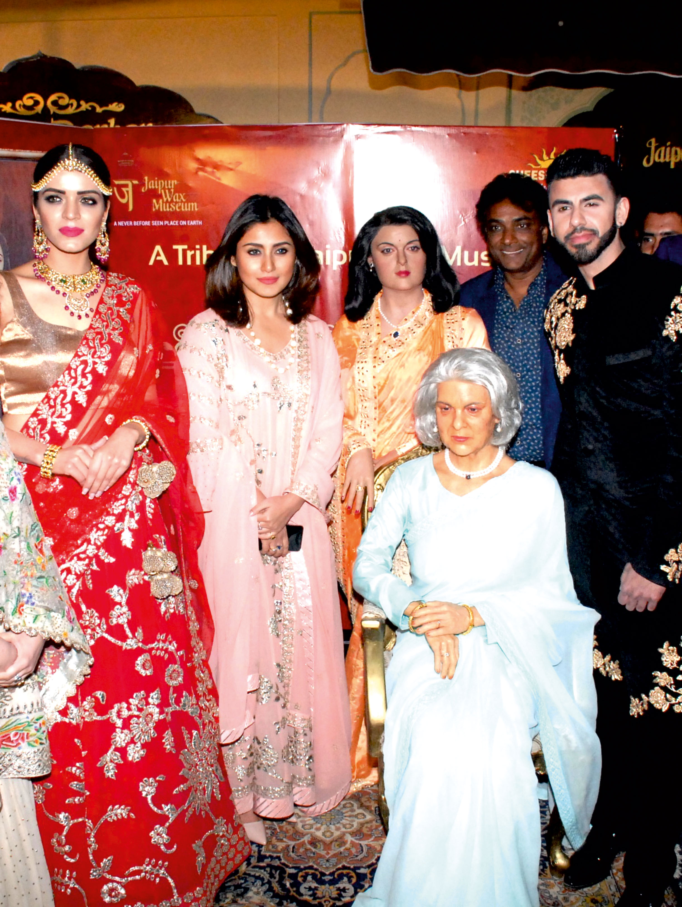
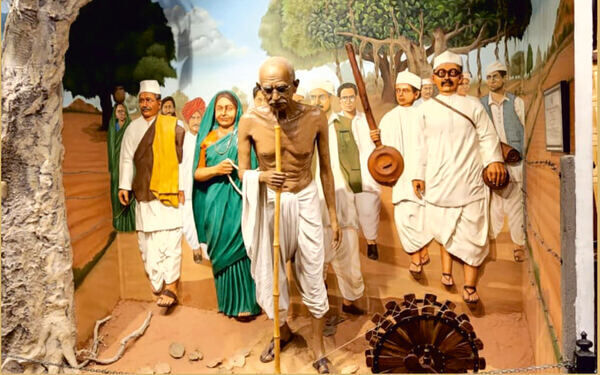
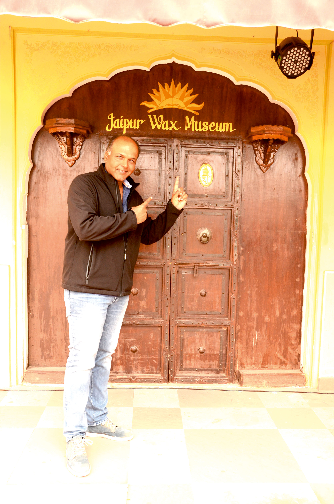
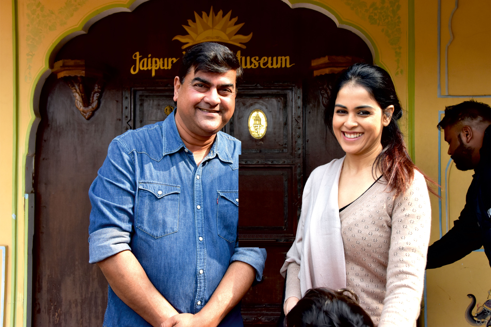
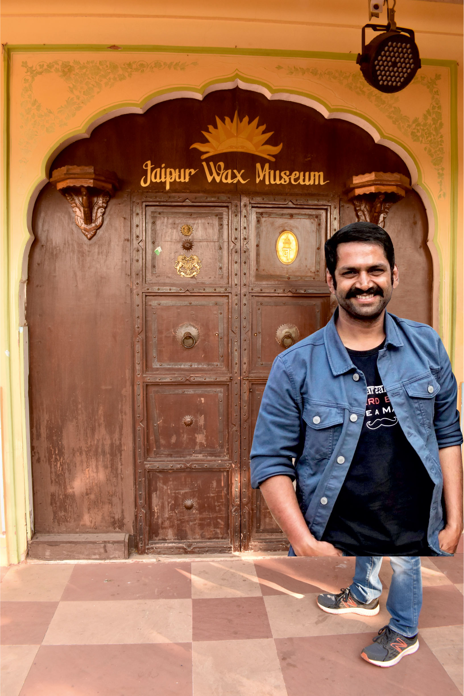
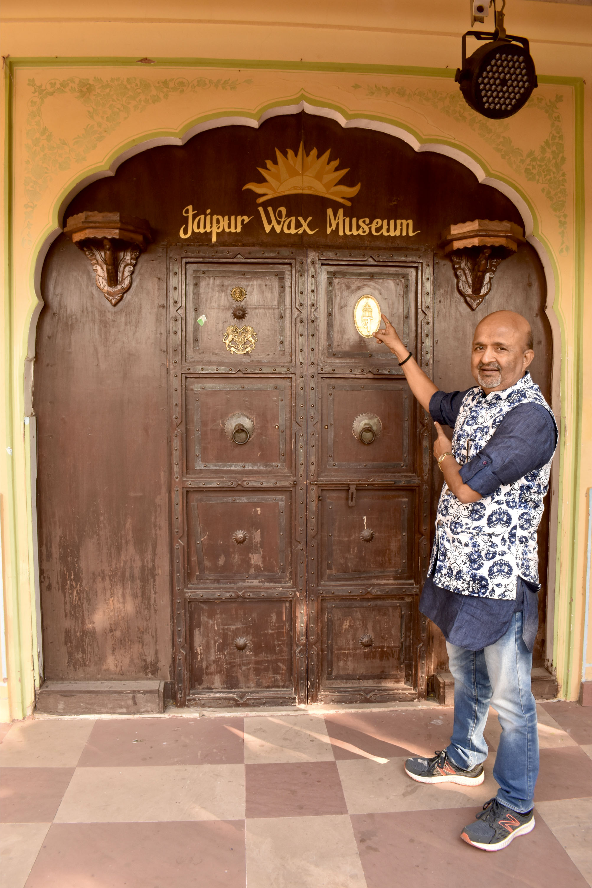
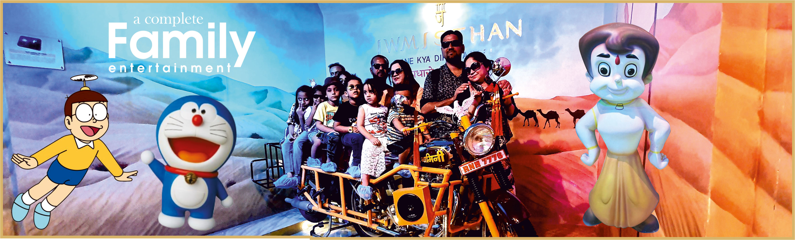
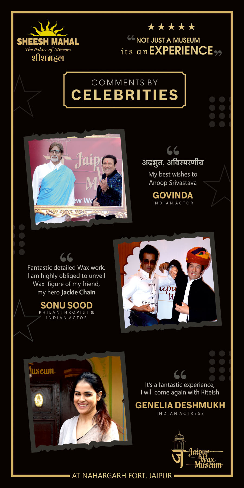
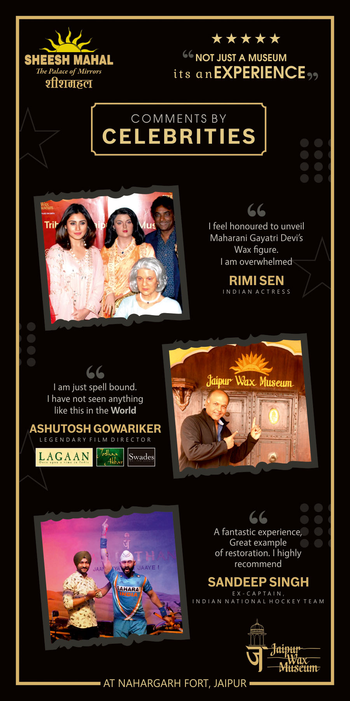
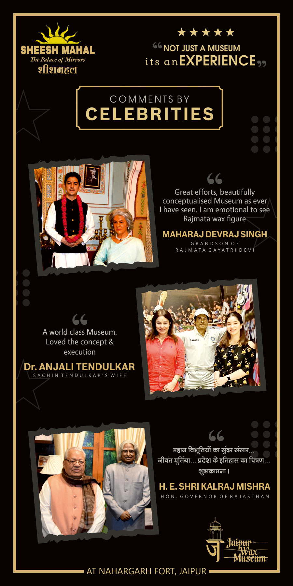